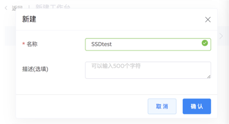
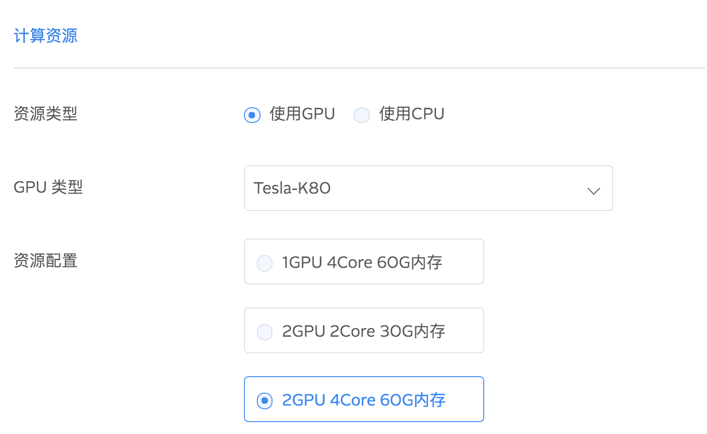
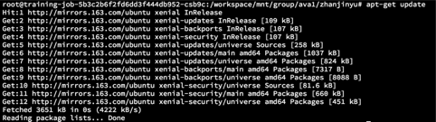
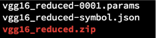
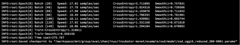
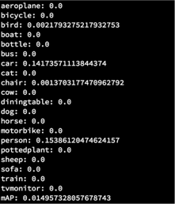
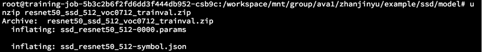
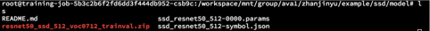
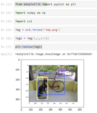
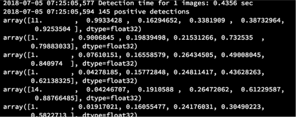

训练图像检测模型
SSD，英文全称 Single Shot Multibox Detector，是用于目标检测的算法。常见的目标检测算法，如 Faster R-CNN ，存在着速度慢的缺点。SSD 不仅提高了速度，而且提高了准确度。本教程会通过训练模型、评估模型并且演示一个实例，为 AVA 深度学习平台使用者提供在 MXNET 框架上，使用 SSD 模型对目标进行检测。
环境准备
创建 AVA 工作台
从工作台标签进入，选择【新建工作台】
输入名称“SSDtest”，点击确认

选择数据集（可以跳过这一步）
选择所需要的镜像 reg.qiniu.com/ava-public/ava-mxnet:py35-cuda80-cudnn7，然后点击下一步
选择计算资源
此处选择 GPU ，然后选择 4 核 60 G 内存

点击创建，等待工作台创建完成
准备
如果你使用的是 mxnet-python API，你可能已经有了 python 模块，如果没有的话，此处我们需要安装：cv2, matplotlib 和 numpy，使用 apt-get 命令：
首先进行 apt-get update 操作：

再进行
sudo apt-get install python-opencv python-matplotlib python-numpy由于我们要使用 MXNET 来运行 SSD 训练，进一步配置：
$ git clone [git@github.com](/var/folders/sc/klgj6bt56195l0nyqzhjw5080000gn/T/abnerworks.Typora/52D8EA54-2FF8-4A92-B1C7-B2BFCF391F8D/mailto:git@github.com):apache/incubator-mxnet.git $ cd incubator-mxnet $ cp -r example /workspace/mnt/group/<your-group>/<your-name>/.把 example 目录拷贝的自己的共享目录, 方便运行。
训练模型
此示例仅适用于在 Pascal VOC 数据集上的训练。首先下载数据集，再将他们解压至 model 文件夹目录下：
得到：

接着下载 Pascal VOC 数据集：
$ wget http://host.robots.ox.ac.uk/pascal/VOC/voc2012/VOCtrainval_11-May-2012.tar` $ wget http://host.robots.ox.ac.uk/pascal/VOC/voc2007/VOCtrainval_06-Nov-2007.tar` $ wget http://host.robots.ox.ac.uk/pascal/VOC/voc2007/VOCtest_06-Nov-2007.tar`解压：
$ tar -xvf VOCtrainval_11-May-2012.tar` $ tar -xvf VOCtrainval_06-Nov-2007.tar` $ tar -xvf VOCtest_06-Nov-2007.tar`我们要使用 VOC20017 和 VOC2012 里的 trainval 数据集， VOC2007 和 VOC2012 都在 VOCdevkit 文件夹下，然后将 VOCdevkit 和 data / VOCdevkit 两个文件夹链接到一起，
创建训练：
bash tools/prepare_pascal.sh开始训练：
可以看到每个 batch 训练的速度和损失：

默认情况下，此示例使用的 batch-size 为 32，learning_rate 为 0.002. 我们可以根据不同的配置来微调一下其中的参数，例如，如果你用的是四核的 GPU ：
python3 train.py --gpus 0,1,2,3 --batch-size 32.输入
python3 demo.py —help获得更多帮助
评估训练模型
确保 val.rec 为验证数据集，运行
python3 evaluate.py --gpus 0,1 --batch-size 128 --epoch 2运行结果如下图。可以看到由于数据数量较少，平均准确率 MAP（Mean Average Precision）较低：

示例
首先下载模型 ssd_resnet50_0712.zip，将其拷贝至你的 model 目录下
解压文件：
apt-get install zip
解压后，ls查看文件夹内得到了 ssd_resnet50_512-0000.params 和 ssd_resnet50_512-symbol.json

运行
接着下载测试要用的图片数据集
然后运行示例：
如果出现 No module named ‘_tkinter’ 的错误，说明没有安装 python3-tk 包，进行安装：
apt-get install python3-tk可以看到 demo.py 运行成功后，目录下出现 tmp.png，此处在Python3 notebook 内用代码输出出片结果：

继续运行：
Python3 demo.py --epoch 0 --images ./data/demo/dog.jpg --thresh 0.5Python3 demo.py --cpu --network resnet50 --data-shape 512结果：

你可以输入
python demo.py —help获得更多帮助